The Fornax and Eridanus clusters are two very famous clusters in the southern hemisphere. Although they look near to each other, they are separated by about 20 million light years. The nearer Fornax cluster is about 65 million light years from us, and the Eridanus cluster is about 85 million light years from us. There are many other groups of galaxies scattered around these two clusters and collectively these groups are often called the Fornax Supercluster or Southern Supercluster.
This is a map of the Fornax Cluster. This is the most famous of the two clusters because it has a compact core of galaxies scattered across two degrees of the sky which makes it a popular target for amateur astronomers. This cluster contains two huge galaxies - NGC 1316 and NGC 1365 - which are larger than any of the galaxies in the Virgo cluster.
Below - the two largest galaxies in the Fornax cluster. NGC 1316 (left) is a massive lenticular galaxy - the faint signs of spiral structure in this galaxy may indicate that it has recently swallowed a spiral galaxy. NGC 1316 is a powerful radio source (it is known as Fornax A by radio astronomers). Visible above the galaxy is NGC 1317 - a spiral galaxy which may become another victim of this huge galactic cannibal. NGC 1365 (right) is the most famous galaxy in the Fornax cluster. It is a barred spiral galaxy with a beautiful shape.
| 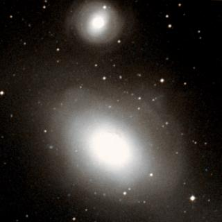 | 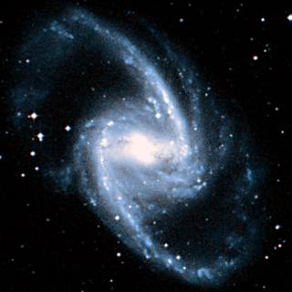 |
| NGC 1316 | NGC 1365 |
This is a list of the main galaxies in the Fornax cluster. These are the 54 largest galaxies in this cluster. This is about one third of the number of comparable galaxies in the Virgo cluster.
1 2 3 4 5 6 7 8
Name Equatorial Blue Type Size Size RV
Coordinates Mag (') kly km/s
RA Dec
ESO 357-07 03 10.4 -33 09 14.7 SBm 2.2 40 981
ESO 357-12 03 16.9 -35 32 14.8 SBcd 2.2 40 1445
IC 1913 03 19.6 -32 28 14.5 SBb 2.1 40 1318
NGC 1310 03 21.1 -37 06 13.0 SBc 1.9 35 1640
PGC 12625 03 22.1 -37 35 ? Irr 2.9 55 1507
NGC 1316 03 22.7 -37 12 9.8 S0 11.5 215 1664
NGC 1317 03 22.7 -37 06 11.9 SBa 3.0 55 1815
NGC 1326 03 23.9 -36 28 11.5 S0 4.3 80 1247
NGC 1326A 03 25.1 -36 22 14.7 SBm 1.7 30 1719
NGC 1326B 03 25.3 -36 23 13.7 SBm 3.5 65 888
IC 1919 03 26.0 -32 54 13.9 E 1.6 30 1158
NGC 1336 03 26.5 -35 43 13.4 E 1.9 35 1360
NGC 1341 03 28.0 -37 09 13.3 SBab 1.6 30 1760
NGC 1339 03 28.1 -32 17 12.8 E 1.9 35 1240
NGC 1344 03 28.3 -31 04 11.2 E 5.6 105 1052
NGC 1351A 03 28.8 -35 11 14.2 SBbc 2.3 45 1241
ESO 358-10 03 29.7 -33 33 14.8 E 1.5 30 1620
NGC 1351 03 30.6 -34 51 12.4 E 3.2 60 1420
NGC 1350 03 31.1 -33 38 11.2 SBab 5.8 110 1785
NGC 1365 03 33.6 -36 08 10.3 SBb 11.0 205 1547
NGC 1366 03 33.9 -31 12 13.1 S0 1.9 35 1137
NGC 1374 03 35.3 -35 14 12.0 E 2.7 50 1240
NGC 1375 03 35.3 -35 16 13.4 S0 2.1 40 643
IC 335 03 35.5 -34 27 13.4 S0 2.3 45 1530
NGC 1379 03 36.1 -35 26 11.9 E 2.6 50 1264
NGC 1380 03 36.5 -34 59 11.1 S0 4.8 90 1737
NGC 1381 03 36.5 -35 18 12.7 S0 2.6 50 1673
NGC 1369 03 36.8 -36 15 13.6 Sa 1.7 30 1340
NGC 1386 03 36.8 -36 00 12.2 S0 3.4 65 755
NGC 1380A 03 36.8 -34 44 13.4 S0 2.5 45 1419
NGC 1387 03 37.0 -35 30 11.8 E 3.2 60 1219
NGC 1382 03 37.1 -35 12 13.8 E 1.5 30 1697
NGC 1389 03 37.2 -35 45 12.6 E 2.6 50 883
NGC 1399 03 38.5 -35 27 10.3 E 6.8 130 1335
NGC 1404 03 38.9 -35 36 10.9 E 4.1 75 1826
NGC 1406 03 39.4 -31 19 12.9 SBbc 3.9 75 963
NGC 1427A 03 40.1 -35 38 14.2 Irr 2.1 40 1927
ESO 358-50 03 41.1 -33 47 13.9 S0 1.6 30 1151
ESO 358-51 03 41.5 -34 53 14.1 Sa 1.5 30 1626
NGC 1425 03 42.2 -29 54 11.4 Sb 6.0 115 1402
NGC 1427 03 42.3 -35 24 11.8 E 3.6 70 1327
NGC 1428 03 42.4 -35 09 14.0 E 1.5 30 1602
ESO 358-54 03 43.0 -36 16 14.2 SBd 1.7 30 798
NGC 1437 03 43.6 -35 51 12.9 SBab 2.8 50 1296
ESO 358-60 03 45.2 -35 34 15.6 Irr 1.7 30 710
ESO 358-61 03 45.9 -36 22 14.0 Sc 2.5 45 1415
NGC 1460 03 46.2 -36 42 13.5 S0 1.7 30 1277
ESO 358-63 03 46.3 -34 57 12.6 Sc 4.8 90 1838
IC 1993 03 47.1 -33 42 12.5 SBb 2.5 45 1004
ESO 302-09 03 47.6 -38 35 14.6 SBd 2.2 40 908
ESO 302-14 03 51.7 -38 27 15.5 Irr 1.5 30 798
ESO 359-03 03 52.0 -33 28 14.1 Sab 1.8 35 1495
NGC 1484 03 54.3 -36 58 13.9 Sb 2.5 45 952
IC 2006 03 54.5 -35 58 12.5 E 1.9 35 1285
|
Column 1: The usual name of the galaxy.
Column 2: The Right Ascension for epoch 2000.
Column 3: The Declination for epoch 2000.
Column 4: The blue apparent magnitude of the galaxy.
Column 5: The galaxy type: E=Elliptical, S0=Lenticular, Sa,Sb,Sc,Sd=Spiral,
SBa,SBb,SBc,SBd=Barred Spiral, Sm,SBm,Irr=Irregular.
Column 6: The angular diameter of the galaxy (arcminutes).
Column 7: The diameter of the galaxy (thousands of light years).
Column 8: The recessional velocity (km/s) of the galaxy relative to
the cosmic microwave background.
References:
The HyperLeda Database, (2003).
Below - three more galaxies in the Fornax cluster. NGC 1350 (left) is large barred spiral galaxy. NGC 1399 (centre) is the large elliptical galaxy at the heart of the cluster. NGC 1404 (right) is another large elliptical galaxy near NGC 1399.
| 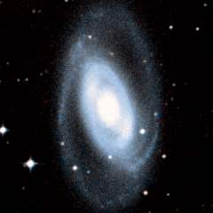 | 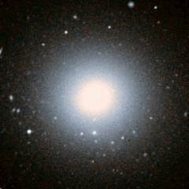 | 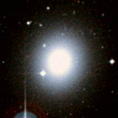 |
| NGC 1350 | NGC 1399 | NGC 1404 |
Shown below is a picture of the middle of the Fornax Cluster. The cluster has a compact core containing a lot of bright galaxies which means that it actually looks better on a photograph than the Virgo cluster. The bright elliptical galaxy in the centre is NGC 1399, and the famous barred-spiral galaxy NGC 1365 can be seen at the bottom-right corner.
| Properties of the Fornax Cluster | |
|---|---|
| Equatorial Coordinates | RA=03h35m Dec=-36° |
| Galactic Coordinates | l=238° b=-54° |
| Supergalactic Coordinates | L=262° B=-41° |
| Distance to the centre of the cluster | 65 million light years |
| Number of large galaxies in the cluster | 54 |
| Alternative names for the cluster | Fornax I cluster |
This is a map of the Eridanus Cluster. This cluster is less spectacular than the Fornax cluster, partly because the galaxies are spread across a larger area and partly because the cluster is rather further and hence dimmer than the Fornax cluster. The Eridanus cluster is roughly split into two halves: a northern subgroup around NGC 1407 and a southern subgroup around NGC 1395.
Below - three spiral galaxies in the Eridanus cluster. NGC 1300 is a large barred spiral galaxy. NGC 1371 (centre) and NGC 1385 (right) are two spiral galaxies to the south of the centre of the cluster and probably close companions.
| 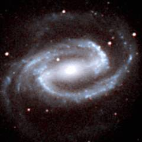 | 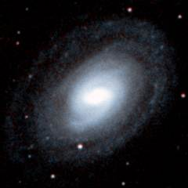 | 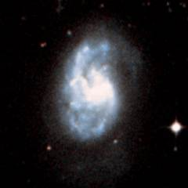 |
| NGC 1300 | NGC 1371 | NGC 1385 |
This is a list of the 73 largest galaxies in the Eridanus cluster. This is a longer list than that for the Fornax cluster. The Eridanus cluster seems to be the slightly larger and the slightly richer of the two clusters.
1 2 3 4 5 6 7 8
Name Equatorial Blue Type Size Size RV
Coordinates Mag (') kly km/s
RA Dec
ESO 547-09 03 06.0 -19 23 16.8 Irr 1.3 35 1509
ESO 547-12 03 09.6 -17 50 16.5 Scd 1.5 35 1837
NGC 1232 03 09.8 -20 35 10.7 SBc 6.9 170 1517
IC 1898 03 10.3 -22 24 13.7 SBc 3.4 85 1164
ESO 547-20 03 13.0 -17 56 16.0 SBm 1.2 30 1825
NGC 1258 03 14.1 -21 46 13.9 SBc 1.3 30 1340
NGC 1297 03 19.2 -19 06 13.5 E 2.0 50 1395
NGC 1300 03 19.7 -19 25 11.2 SBbc 6.0 150 1421
NGC 1315 03 23.1 -21 23 14.0 S0 1.5 35 1534
PGC 12680 03 23.4 -19 17 ? Irr 1.3 30 1400
ESO 548-05 03 23.8 -19 45 14.7 SBm 1.5 35 1690
NGC 1325 03 24.4 -21 33 12.3 SBbc 4.7 115 1446
NGC 1325A 03 24.8 -21 20 13.6 SBcd 1.8 45 1188
ESO 548-16 03 26.0 -21 20 15.6 Scd 1.7 40 1977
NGC 1332 03 26.3 -21 20 11.4 E 4.2 105 1383
ESO 548-21 03 27.6 -21 14 14.7 SBd 2.0 50 1541
ESO 548-25 03 29.0 -22 09 15.0 SBa 1.3 30 1542
NGC 1345 03 29.5 -17 47 14.3 SBc 1.4 35 1385
ESO 481-30 03 29.6 -23 21 15.5 Scd 1.5 35 1504
NGC 1347 03 29.7 -22 17 13.9 SBc 1.4 35 1624
ESO 548-28 03 30.6 -17 56 14.0 S0 1.3 35 1360
ESO 548-29 03 30.8 -21 03 14.3 SBbc 1.1 30 1175
NGC 1353 03 32.1 -20 49 12.4 SBb 3.5 85 1390
ESO 548-32 03 32.3 -17 43 15.8 SBm 1.6 40 1815
ESO 548-33 03 32.5 -18 57 14.5 S0 1.3 35 1552
ESO 548-34 03 33.0 -21 05 14.6 SBc 1.1 30 1610
ESO 482-05 03 33.0 -24 08 15.2 SBcd 2.1 50 1783
IC 1952 03 33.4 -23 43 13.5 SBbc 2.5 60 1683
IC 1953 03 33.7 -21 29 12.7 SBc 2.6 65 1733
NGC 1359 03 33.8 -19 29 13.0 SBm 2.1 55 1833
NGC 1362 03 33.9 -20 17 14.2 S0 1.2 30 1085
ESO 548-44 03 34.3 -19 25 14.2 S0 1.3 35 1561
ESO 548-47 03 34.7 -19 02 14.1 S0 2.5 60 1472
NGC 1371 03 35.0 -24 56 11.6 SBa 5.6 140 1344
NGC 1370 03 35.2 -20 22 13.9 E 1.5 35 933
IC 1962 03 35.6 -21 18 14.8 SBd 2.5 60 1670
ESO 482-11 03 36.3 -25 36 14.7 Sbc 1.4 35 1469
NGC 1377 03 36.7 -20 54 13.8 S0 1.7 45 1645
NGC 1385 03 37.5 -24 30 11.5 SBc 3.7 90 1373
NGC 1383 03 37.7 -18 20 13.8 S0 1.7 40 1828
ESO 482-17 03 37.7 -22 55 14.9 Sab 1.3 30 1330
NGC 1390 03 37.9 -19 00 14.9 SBa 1.3 35 1078
NGC 1395 03 38.5 -23 02 10.7 E 5.6 140 1577
NGC 1398 03 38.9 -26 20 10.5 SBab 7.1 175 1289
NGC 1403 03 39.2 -22 23 14.1 E 1.3 30 1751
NGC 1401 03 39.4 -22 43 13.7 S0 1.9 50 1406
NGC 1400 03 39.5 -18 41 12.3 E 2.3 60 415
ESO 548-63 03 39.6 -20 01 15.1 Sbc 1.4 35 1846
ESO 548-65 03 40.0 -19 22 15.3 Sa 1.4 35 1102
IC 343 03 40.1 -18 27 14.3 S0 1.4 35 1730
NGC 1407 03 40.2 -18 35 10.9 E 5.1 125 1650
ESO 548-68 03 40.3 -18 56 14.3 E 1.3 35 1636
NGC 1412 03 40.5 -26 52 14.7 S0 1.4 35 1675
ESO 548-70 03 40.7 -22 17 15.4 SBcd 1.6 40 1615
ESO 482-32 03 40.7 -26 47 15.9 Irr 1.2 30 1621
NGC 1415 03 40.9 -22 34 12.8 Sa 3.3 80 1451
NGC 1414 03 41.0 -21 43 14.6 SBbc 1.6 40 1464
ESO 482-35 03 41.2 -23 50 14.2 SBab 1.8 45 1756
NGC 1422 03 41.5 -21 41 14.2 SBab 2.3 55 1514
IC 346 03 41.7 -18 16 13.9 S0 1.9 45 1830
ESO 548-79 03 41.9 -18 54 14.8 Sa 1.1 30 1914
ESO 548-82 03 42.7 -17 30 15.4 Sbc 1.1 30 1590
NGC 1426 03 42.8 -22 06 12.7 E 2.5 60 1296
ESO 549-02 03 43.0 -19 01 14.9 SBm 1.3 30 988
ESO 549-06 03 43.6 -21 14 15.7 Irr 1.3 30 1490
NGC 1439 03 44.8 -21 55 12.4 E 2.6 65 1577
NGC 1440 03 45.0 -18 16 12.9 S0 2.2 55 1403
NGC 1438 03 45.3 -23 00 13.3 SBa 2.0 50 1438
NGC 1452 03 45.4 -18 38 12.9 Sa 2.3 60 1619
ESO 549-18 03 48.2 -21 28 13.3 SBc 2.5 60 1473
ESO 482-46 03 49.7 -27 00 13.7 Sc 3.5 90 1422
ESO 482-49 03 52.4 -23 03 15.3 Sc 1.1 30 1377
NGC 1482 03 54.6 -20 30 13.3 S0 2.2 55 1753
|
Column 1: The usual name of the galaxy.
Column 2: The Right Ascension for epoch 2000.
Column 3: The Declination for epoch 2000.
Column 4: The blue apparent magnitude of the galaxy.
Column 5: The galaxy type: E=Elliptical, S0=Lenticular, Sa,Sb,Sc,Sd=Spiral,
SBa,SBb,SBc,SBd=Barred Spiral, Sm,SBm,Irr=Irregular.
Column 6: The angular diameter of the galaxy (arcminutes).
Column 7: The diameter of the galaxy (thousands of light years).
Column 8: The recessional velocity (km/s) of the galaxy relative to
the cosmic microwave background.
References:
The HyperLeda Database, (2003).
Below - three more galaxies in the Eridanus cluster. NGC 1395 (left) is the largest elliptical galaxy in the southern half of the cluster. NGC 1398 (centre) is a large spiral galaxy at the southern edge of the cluster. NGC 1407 (right) is the largest elliptical galaxy in the northern half of the cluster.
| 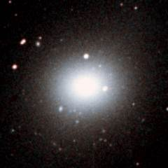 | 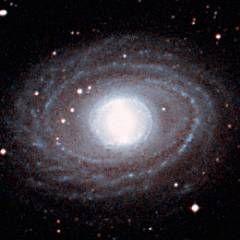 | 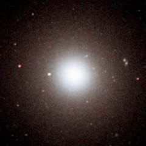 |
| NGC 1395 | NGC 1398 | NGC 1407 |
Shown below is NGC 1232. Located to the right of the cluster, this is another of the many spiral galaxies located in this group. This is one the most beautiful galaxies in the cluster because of its multiple spiral arms.
| Properties of the Eridanus Cluster | |
|---|---|
| Equatorial Coordinates | RA=03h35m Dec=-22° |
| Galactic Coordinates | l=214° b=-53° |
| Supergalactic Coordinates | L=281° B=-43° |
| Distance to the centre of the cluster | 85 million light years |
| Number of large galaxies in the cluster | 73 |
| Alternative names for the cluster | Fornax II cluster |